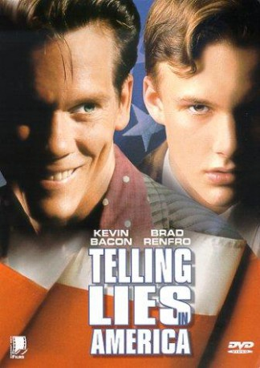

#7922 American Dreamer - Charmante Lügner
Alternativ: Telling Lies in America
 
 IMDB-Wertung: 6.3 / 10
IMDB-Wertung: 6.3 / 10  Metascore: 0
Metascore: 0 
Karchy (Brad Renfro) is a boy in school who has moved from Hungary to America in the 1960s. He is struggling in school and trying to adjust to America's culture. He then hears about a radio DJ, Billy Magic (Kevin Bacon), who holds a contest for a Student Hall of Fame every week. When Karchy finally wins after several weeks, he spends more time with Billy Magic...a man with money, girls, and glam. Karchy thinks that, by spending time with Magic, he can become "cool". He then starts telling lies, to make himself seem greater than he really is. But when his lies begin hurting the people he cares about, he realizes that it isn't worth telling lies if it affects your friends. Afterwards, he learns to accept himself for the person he is, and gives up lying. And as for Billy Magic, it turns out that he pays his price for all the lies that he has told as well....
Jahr: 1997
Dauer: 101 Minuten
FSK: 12
Land: USA Studio: Banner EntertainmentTonspuren:
Untertitel:
Auflösung: 1080p (1920x816) Größe: 7127 MB
Genre: Drama, Musik
Regisseur: Guy Ferland
Drehbuch: Joe Eszterhas
Soundtrack: Nicholas Pike
Darsteller:
 Kevin Bacon als Billy Magic
Kevin Bacon als Billy Magic Brad Renfro als Karchy 'Chucky' Jonas
Brad Renfro als Karchy 'Chucky' Jonas Maximilian Schell als Dr. Istvan Jonas
Maximilian Schell als Dr. Istvan Jonas Calista Flockhart als Diney Majeski
Calista Flockhart als Diney Majeski Paul Dooley als Father Norton
Paul Dooley als Father Norton Jonathan Rhys Meyers als Kevin Boyle
Jonathan Rhys Meyers als Kevin Boyle Luke Wilson als Henry
Luke Wilson als Henry K.K. Dodds als Justine
K.K. Dodds als Justine Tony Devon als Danny Hogan
Tony Devon als Danny Hogan Rohn Thomas als Sgt. Disapri
Rohn Thomas als Sgt. Disapri Tuesday Knight als WHK Receptionist
Tuesday Knight als WHK Receptionist- Matt Miller als Asst. District Attorney
 Billy Lockwood als Musician: Blood Smith and the Tenderloins
Billy Lockwood als Musician: Blood Smith and the Tenderloins- Tom Nagel als Member of Kevin Boyle's Gang / Sock Hop Dancer
- John Sloan als Member of Kevin Boyle's Gang
- Corey Landis als Farmers Market Vegetable Salesperson (uncredited)
- Damen Fletcher als Amos 'Blood Smith'
- Jerry Swindall als Andy 'Croak' Stas
- James Kisicki als Cecil Simms
- J.J. Horna als The Blind Kid
- Ben Saypol als Timmy Morelli
- Joe Baka als Det. Carpenter
- Dave Buckel als WHK Newscaster
- Jack Skelly als Immigration Judge John J. Donnelly
- Jane Jean Miller als Groupie #1
- Wendy Waltz als Groupie #2
- Angelique Osborne als Giggly girl
- Abdullah Bey als Old man
- Kevin Willigham als Driver
- Patrick White als School Kid
- Ron Lewis als Musician: Blood Smith and the Tenderloins
- Christopher Jenning als Musician: Blood Smith and the Tenderloins
- Phillip O'Rourke als Musician: Blood Smith and the Tenderloins
- Niles Rivers als Musician: Blood Smith and the Tenderloins
- Daryl Trammer als Musician: Blood Smith and the Tenderloins
- Matt Bunner als Member of Kevin Boyle's Gang
- Tom Palmieri als Member of Kevin Boyle's Gang / Sock Hop Dancer
- John Woyton als Member of Kevin Boyle's Gang
- Mike Ross als Member of Kevin Boyle's Gang
- Courtne Benson als Sock Hop Dancer
- Dottie Dixon als Sock Hop Dancer
- Ben Harvey als Sock Hop Dancer
- Lucas Haugh als Sock Hop Dancer
- Tjader France als Sock Hop Dancer
- Stacey Woodson als Sock Hop Dancer
- Monica Reed als Sock Hop Dancer
- Renzy Parnell als Sock Hop Dancer
- Brendon Berns als Sock Hop Dancer
- Justin Leach als Sock Hop Dancer
- Matt McBride als Sock Hop Dancer
Datei: X:\1997\American Dreamer - Charmante Lügner (1997, FSK12, 1920x816).mkv seit 06.01.2018
Festplatte: HD 1996-2002
 Es gibt insgesamt 83 Filme in der Gruppe '1997'
Es gibt insgesamt 83 Filme in der Gruppe '1997'